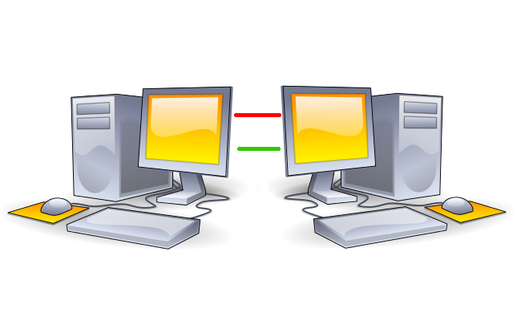

aha i c , then choose whatever is preferable.
Can you please also add an icon for the new physical isolation sub forum?
Good day,
sure, question would be, wheter there is an image that really fits to this topic. Maybe something along the lines of this:

Though, to be honest, I’m not really sure. Something like the “physical separation of two aspects of a computer program for security reasons”, is rather hard to represent, especially with the size limits impossed by the forum size. The width of the example would, at least in my book, already be far to big for using it.
Have a nice day,
Ego
Looks awesome! Before I scale it down, what’s the license of this image?
Good day,
the following, as always:
Physical Isolation in a rudimentary graphic is licensed under a Creative Commons Attribution-ShareAlike 4.0 International License.
Based on a work at https://commons.wikimedia.org/wiki/File:Desktop_computer_clipart_-_Yellow_theme.svg.
{kind=link}
Though, if you don’t mind, I’d like to improve the whole thing a little bit. Especially the cables, if that could even be called a cable, are far to thin and featureless, also, maybe stripping down the “PCs” a bit, to make them more compact, quet memorable, would be a good idea. Though this will sadly only be possible tomorrow, because currently I only have a trackpad, but no mouse or tablet at my disposal to even draw a proper line.
Have a nice day,
Ego
Sure thing. Keep your time. No need for rush. Can you resize it to the usual size also please?
Good day,
so this was my first attempt, sadley unusable, due to the fact that at a resolution of 26x26, nothing was visible:
{kind=link}
At 26x26:
That’s why I settled on this really simplistic version, which hopefully is reasonably sized:
Hopefully, the “meaning” of this is more or less understandable.
Licensing:
Isolation or something is licensed under a Creative Commons Attribution-ShareAlike 4.0 International License.
Have a nice day,
Ego
P.S.: How do I add this to the forum?
Click on the forum category so you end up at https://forums.whonix.org/c/physical-isolation. Then press edit. Then press images. Then upload Category Logo Image.
Good day,
call me thick, but I can’t find the “edit” button.
{kind=link}
Maybe editing categories requires some extended rights, maybe I need new contact lenses, I’m not sure.
Have a nice day,
Ego
P.S.: Yes, I use Elementary OS for my daily routine…
Just now granted admin. Should be net to New Topic. Please try again.
Good day,
thanks, worked flawlessly.
Have a nice day,
Ego
choose one of the following: (added the links with each one of them so u can check the license)
or
or
or
{kind=link}
2 Likes
The (red) speaker is a great idea to illustrate that. However, the surrounding of the speaker is too big since this can only be a very small icon.
Could you please edit the speaker icon (remove most of the red circle) or bring https://www.iconfinder.com/icons/171275/audio_high_sound_speaker_volume_icon into the right size?
(I think the exact required size has been discussed earlier in this thread here?)
here you go:
1 Like

That didn’t work. When you download it from the forums, it’s still in original size.
Anyhow. I scaled it down using gimp. Changed it in Whonix news forums. However, it looks a bit blurry in comparison with our other forum icons.
check now:

this is the link of the resized image
1 Like
Looks better now!